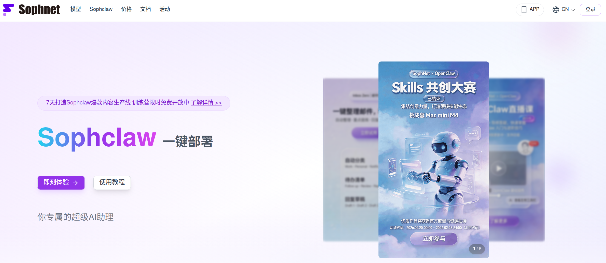
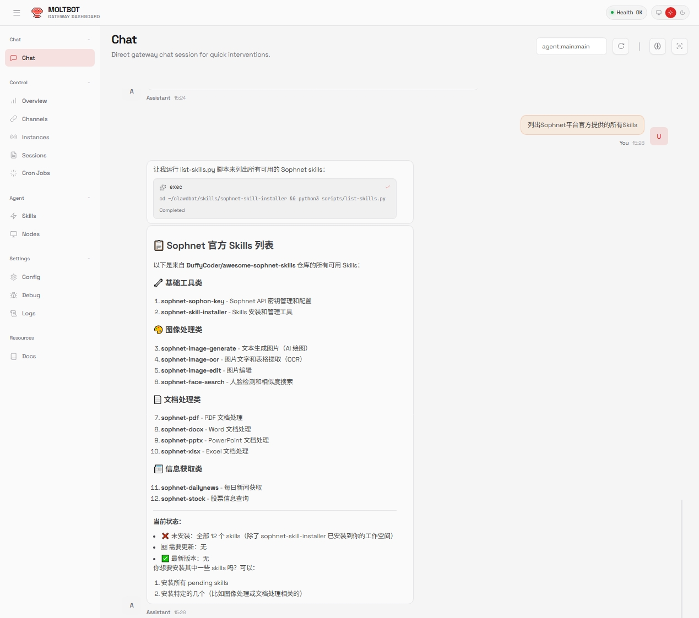

Sophclaw 问答速查：装一只会干活的 AI 龙虾到底值不值
整理一篇关于 Sophclaw 的快问快答——从定位、安装、核心流程到渠道接入、常见坑，八个问题讲清这只"AI 龙虾"的真面目。
整理一篇关于 Sophclaw 的快问快答。八个问题，把这只"AI 龙虾"能干什么、怎么用、有什么坑，一次说清。
Sophclaw 到底是什么？一只"龙虾"能帮我干嘛？
一句话：Sophclaw官网上的这只龙虾是一个能跨渠道待命、自动拆指令、调工具执行的 AI Agent 运行时。它不是单纯的对话机器人——你给它一条活，它会理解、拆解、调用对应工具、一步步跑完，最后交付结果。运行期间的每一步轨迹都实时可见，出了问题能精确定位到是哪一步出错。它能在手机端 App、PC 客户端、飞书群、钉钉群里待命，支持飞书文档/多维表格/知识库六个 Skill 的直接读写，还能创建多只独立的龙虾各管各的事。

谁在用？什么样的场景适合上它？
适合三类人：一是个人效率党——让 AI 帮你整理文件清单、写待办、读文档、生成周报；二是飞书或钉钉重度依赖的团队——把龙虾接进群，让它从多维表格拉数据写日报、读知识库整理条目、批量改文档权限；三是想搭自动化流水线的人——定时触发、跨渠道通知、多 Agent 协作都能覆盖。反过来说，如果你只是想跟 AI 聊聊天、写几句文案，用现成的对话框就够了，没必要上 Sophclaw。
怎么装起来？要什么前提条件？
两条路：手机端从官方下载装 App 或 PC 客户端。都需要一个 Sophnet 账号（手机端是验证码登录）。登录后点"即刻体验"或在控制台执行创建命令，服务端自动拉起智能体实例——几秒钟到几十秒，期间会拉取运行时环境、初始化工作空间、连接你选定的大模型后端。创建完成后对话框变成可输入状态，就能开始派活了。智能体有四份核心身份文件（SOUL.md 定义角色、MEMORY.md 存长期记忆、AGENTS.md 定工作规则、TOOLS.md 列可用工具），想要一只"懂自己"的龙虾，就从改 SOUL.md 和 AGENTS.md 开始。
核心功能怎么用？跑一条指令实际是什么流程？
执行分四个阶段，全程在对话框里可见：理解（AI 先复述它理解到的任务）→ 拆解（列出打算分几步做）→ 执行（逐步跑，每一步有输出或状态更新）→ 交付（输出最终结果或生成的文件）。这不是摆设——如果结果不对，你能精确定位到是指令理解错了、拆解步骤有问题、还是执行环节卡住了。第一次派活建议选小而完整、结果可验证的，比如"帮我整理一份桌面文件清单按类型分组"，不要一上来就派"帮我重构整个项目"这种复杂活——出了问题分不清是指令没写好、权限没给对、还是模型没选好。
飞书 / 钉钉机器人接入到底干嘛用？
把龙虾"放"进飞书或钉钉群里 7×24 待命。接入后你在群里 @它 发指令，它就直接干活。两者差异很小——飞书接入复杂度和钉钉类似，但飞书生态的 Skill 更完善，feishu-doc/wiki/drive/perm/sheets/bitable 六个 Skill 装完，龙虾能直接读写云文档、操作多维表格、导航知识库、管文件权限、编辑电子表格。钉钉那边接入流程基本一致，只需要在开发者后台创建机器人拿到 agentId/clientId/clientSecret/robotCode 四个凭证，然后在 Sophclaw 里配好 dingtalk channel。重要的是两者不冲突——你可以飞书接一只、钉钉接一只，各配各的 workspace 隔离记忆，互不串扰。

常见的坑有哪些？第一次用容易在哪翻车？
最常见的四个坑：一是连接卡住——手机端装不上或 PC 客户端连不上，先去Sophclaw文档的排查指南里找对应条目；二是权限没给对——目标目录不在授权范围、飞书开发者后台的云文档权限没开通，结果 AI 跑一半报权限错误；三是模型没选好——同一个指令换 DeepSeek-Flash 和 Kimi 可能跑出完全不同的结果，结果不对时先换模型试试；四是钉钉权限发布漏了——开通权限后记得在钉钉开发者后台创建版本发布，不然机器人就是个空壳。还有一个容易忽略的点：钉钉群里建议开白名单模式 + requireMention，只允许指定群 @触发，免得被群里无关消息误唤醒。
和市面上其他 AI Agent 工具比，它特别在哪？
三个区别：一是多渠道并行——飞书、钉钉、手机端、PC 端可以同时接入，每只龙虾有独立的 workspace 隔离记忆和文件，不会串台；二是 Skill 生态可扩展——飞书六个 Skill 覆盖了从文档到多维表格的全链路操作，装好就能直接让 AI 读写飞书生态，不需要自己写 API 调用；三是身份文件可定制——SOUL.md、AGENTS.md、MEMORY.md 这一套机制让每只龙虾的角色、规则、长期记忆都是独立可编辑的，不是固定死的模板。当然，它也有代价——配置比纯对话框复杂一些，飞书/钉钉接入需要后台操作，适合愿意花十分钟配一下的人。
值不值得长期投入？是玩具还是生产力工具？
看你用不用得上它的核心能力——跨渠道待命 + 自动拆指令执行 + Skill 生态扩展。如果你只是偶尔问几个问题，那确实没必要。但如果你每天都要在飞书或钉钉里跟文档、表格、群协作打交道，想让 AI 定期帮你拉数据、写日报、整理知识库，或者想搭一条无人值守的自动化流水线，那 Sophclaw 值得花半小时配起来用一周试试。它不是玩具——样本里的定时任务、多 Agent 管理、飞书全链路读写都是正儿八经的生产力场景，跑通一条活之后你会发现，AI Agent 真正该干的事不是跟你聊天，是替你把重复活干完。
最后一句：如果你的工作离不开飞书或钉钉，花十分钟配一只 Sophclaw，大概率不会后悔。这套软件在飞书和钉钉生态的接入、Skill 安装、渠道配置说明都写得很细，文档维护也很活跃。想上手可以去它的官网看详细配置，完整配置模板在GitHub、Gitee 和 GitCode 三个仓库同步维护，国内直连哪个方便就用哪个。